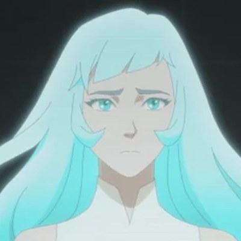
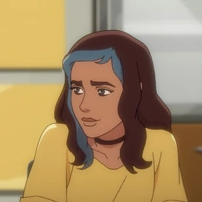
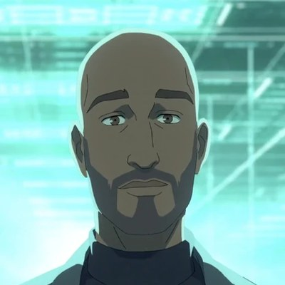
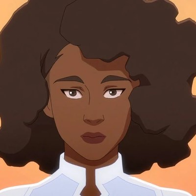
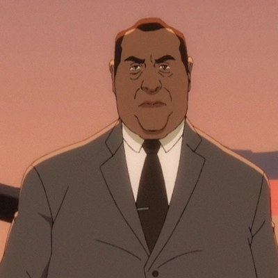
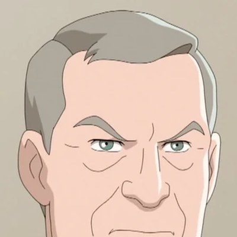
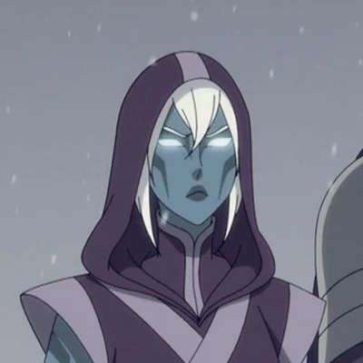
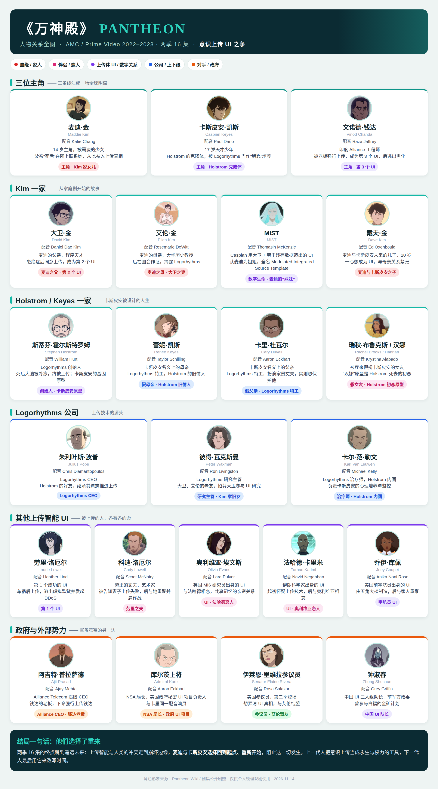

麦迪·金
Maddie Kim
配音 Katie Chang
14 岁主角，被霸凌的少女
父亲“死后”在网上联系她，从此卷入上传真相
时间跳到遥远未来：上传智能与人类的冲突走到崩坏边缘，麦迪与卡斯皮安选择回到起点、重新开始，阻止这一切发生。
没有找到符合的人物，换个关键词试试。
父亲“死后”在网上联系她 → 她发现 Logorhythms 上传了父亲。
一生被 Logorhythms 设计 → 发现自己是 Holstrom 的克隆体。
Alliance 工程师 → 被老板强行上传，逃出后黑化。
三条线汇合 → 全球上传军备竞赛 → 人类与 UI 的冲突 → 结局：重来
Maddie Kim
配音 Katie Chang
14 岁主角，被霸凌的少女
父亲“死后”在网上联系她，从此卷入上传真相
Caspian Keyes
配音 Paul Dano
17 岁天才少年
Holstrom 的克隆体，被 Logorhythms 当作“钥匙”培养
Vinod Chanda
配音 Raza Jaffrey
印度 Alliance 工程师
被老板强行上传，成为第 3 个 UI，后逃出黑化
David Kim
配音 Daniel Dae Kim
麦迪的父亲，程序天才
患绝症后同意上传，成为第 2 个 UI
Ellen Kim
配音 Rosemarie DeWitt
麦迪的母亲，大学历史教授
后在国会作证，揭露 Logorhythms

MIST
配音 Thomasin McKenzie
Caspian 用大卫 + 劳里残存数据造出的 CI
认麦迪为姐姐，全名 Modulated Integrated Source Template
Dave Kim
配音 Ed Oxenbould
麦迪与卡斯皮安未来的儿子，20 岁
一心想成为 UI，与母亲关系紧张
Stephen Holstrom
配音 William Hurt
Logorhythms 创始人
死后大脑被冷冻，终被上传；卡斯皮安的基因原型
Renee Keyes
配音 Taylor Schilling
卡斯皮安名义上的母亲
Logorhythms 特工，Holstrom 的旧情人
Cary Duvall
配音 Aaron Eckhart
卡斯皮安名义上的父亲
Logorhythms 特工，扮演家暴丈夫，实则想保护他

Rachel Brooks / Hannah
配音 Krystina Alabado
被雇来假扮卡斯皮安的女友
“汉娜”原型是 Holstrom 死去的初恋
Julius Pope
配音 Chris Diamantopoulos
Logorhythms CEO
Holstrom 的好友，继承其遗志推进上传
Peter Waxman
配音 Ron Livingston
Logorhythms 研究主管
大卫、艾伦的老友，招募大卫参与 UI 研究
Karl Van Leuwen
配音 Michael Kelly
Logorhythms 治疗师，Holstrom 内圈
负责卡斯皮安的心理培养与监控
UI 顺序要记住：第 1 个是劳里，第 2 个是大卫，第 3 个是钱达。
Laurie Lowell
配音 Heather Lind
第 1 个成功的 UI
车祸后上传，逃出虚拟监狱并发起 DDoS
Cody Lowell
配音 Scoot McNairy
劳里的丈夫，艺术家
被告知妻子上传失败，后与她重聚并肩作战
Olivia Evans
配音 Lara Pulver
英国 MI6 研究员出身的 UI
与法哈德相恋，共享记忆的亲密关系

Farhad Karimi
配音 Navid Negahban
伊朗科学家出身的 UI
起初怀疑上传技术，后与奥利维亚相恋

Joey Coupet
配音 Anika Noni Rose
美国前宇航员出身的 UI
由五角大楼制造，后与家人重聚

Ajit Prasad
配音 Ajay Mehta
Alliance Telecom 腐败 CEO
钱达的老板，下令强行上传钱达

Admiral Kurtz
配音 Aaron Eckhart
NSA 局长，美国政府秘密 UI 项目负责人
与卡里同一配音演员
Senator Elaine Rivera
配音 Rosa Salazar
美国参议员，第二季登场
想弄清 UI 真相，与艾伦结盟

Zhong Shuchun
配音 Grey Griffin
中国 UI 三人组队长，前军方政委
曾参与白福的金矿计划
图例：—— 血缘 ＝ 婚姻 / 伴侣 ～ 恋人 → 上下级 / 效忠 × 对手 ◇ 数字关系（克隆 / 上传 / 造物）
父亲死后以 UI 的身份在网上找到女儿，是全剧的起点。
母亲从不相信丈夫真的死了，到在国会作证扳倒 Logorhythms。
网上相识、互相调查真相，第二季成为并肩的同伴，未来是戴夫的父母。
卡斯皮安是 Holstrom 的克隆体，一生都是为他准备的“钥匙”。
名义上的父母，实际是 Logorhythms 派来监控、培养他的特工。
被雇来的假女友，角色原型是 Holstrom 死去的初恋汉娜。
好友兼继承人，CEO 的位置是替 Holstrom 守着遗志。
老友兼招募者，把大卫拉进 UI 研究，也把他推向上传。
第一个 UI 找到第二个 UI，帮他逃出 Logorhythms。
夫妻因上传生死两隔，又在数字世界重聚。
下属与老板，老板为灭口把他强行上传。
逃出虚拟监狱后，靠同样被上传的受害者帮忙。
前对手、不同国家的 UI，在共享记忆中相恋。
MIST 由两人的残存数据造出，认麦迪为姐姐。
儿子想成为 UI，母亲反对，母子关系因此紧张。
美国政府想把 UI 当武器，SafeSurf 等系统反过来失控。
母亲与参议员结盟，把家庭悲剧变成国会听证。
时间跳到遥远未来：上传智能与人类的冲突走到崩坏边缘。
麦迪与卡斯皮安选择回到起点、重新开始，阻止这一切发生。
上一代人把意识上传当成永生与权力的工具，下一代人最后用它来改写时间。
满分 20 分，16 分以上算真正看懂了。选完一项会立刻标出对错并给出解析，全部答完后上方会给出评级。
